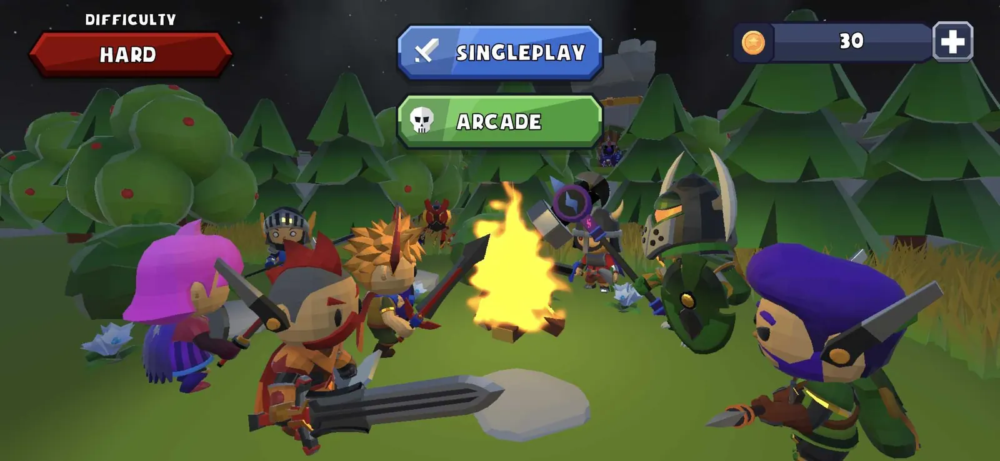

Moja igra · dostupna na Google Play-u
Heroes of Alatyr
Matematika kao najoštriji mač.
Moja igra, sada dostupna na Google Play-u. Edukativna akciona avantura smještena u low-poly fantasy svijetu: kad naiđeš na protivnika, borbu dobijaš tako što nacrtaš rješenje matematičkog zadatka na ekranu, dok sat otkucava. Nacrtane brojeve prepoznaje AI alat koji sam razvio tokom studija na Univerzitetu Mediteran. Multiplayer je takođe u planu, a biće dostupan kada se okupi dovoljna baza igrača.
Preuzmi na Google PlaySolo · razvoj i dizajn

Ključne mogućnosti
- Odgovore crtaš na ekranu, a AI ih prepoznaje pomoću kompjuterske vizije
- Sopstveni model kompjuterske vizije, razvijen tokom studija
- Borbe kroz matematičke zadatke na vrijeme
- 9 heroja koji se otključavaju novčićima
- Nivoi težine i dva moda igre: Singleplay i Arcade